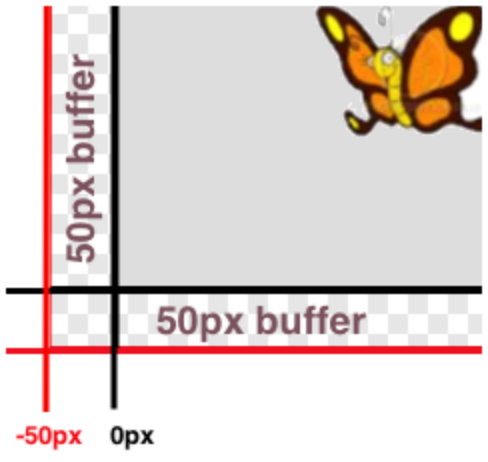

Los estándares con el prefijo BS son específicos de Bootstrap; Otros son del Common Core. Pase el mouse sobre cada estándar para ver sus correspondientes declaraciones de evidencia. Nuestra Documento de estándares Muestra qué unidades cubren cada estándar.
7.EE.3-4: The student uses numerical and algebraic expressions and equations to solve real-life and mathematical problems
use of positive and negative rational numbers in any form (whole numbers, fractions, and decimals) to solve multi-step real-life and mathematical problems
estimation of answers using mental computation to assess the reasonableness of solutions
use of variables to represent quantities in a real-world or mathematical problem
construction of simple equations and inequalities to solve problems by reasoning about the quantities
interpretation in context of solutions of word problems leading to inequalities
8.F.1-3: The student defines, evaluates, and compares functions
description of a function as a rule that assigns to each input exactly one output
A-CED.1-4: The student solves equations and inequalities in one or more variable that describe numbers or relationships
creation of equations and inequalities in one variable, including linear and quadratic functions, and simple radical and exponential functions
A-SSE.1-2: The student interprets the structure of expressions to solve problems in context
manipulation of the structure of an expression, for example, writing x4 _ y4 as a difference of squares
F-IF.1-3: The student uses function notation to describe, evaluate, and interpret functions in terms of domain and range
description of a function using terms domain and range
F-IF.4-6: The student interprets the behavior of functions that arise in applications in terms of the context
interpretation of a relationship between two quantities in a table or graph in terms of key features
relation of the domain of a function to its graph and, where applicable, to the quantitative relationship it describes
BS-DR.2: The student can derive test cases for a given contract and purpose statement
given a Contract and a Purpose Statement, write multiple examples or test cases
given multiple examples, identify patterns in order to label and name the variables
BS-DR.3: Given multiple test cases, the student can define a function
given examples and labeled variable(s), define the function
BS-IDE: The student is familiar with using a REPL, entering expressions properly, and interpreting error messages
enter and evaluate expressions on the computer
BS-PL.1: The student is familiar with declaring values and applying built-in functions using the programming language
representing (numeric, string, boolean, image, etc) values in the programming language
BS-PL.2: The student is comfortable using and writing Contracts for built-in functions
representing a function’s input and output using a contract
Duración: 90 Minutos
Glosario:
booleano: un tipo de datos con dos valores: true y false
cadena: cualquier secuencia de caracteres entre comillas (ejemplos: "hello", " 42", "esto es una cadena! ")
contrato: una declaración del nombre, dominio y rango de una función
equivale a: el resultado de calcular una expresión
Materiales:
Preparación:
Tipos
Funciones
Values
Number
+ - * / sqr sqrt expt
1 ,4 ,44.6
String
string-append string-length
"hello"
Image
rectangle circle triangle ellipse star scale rotate put-image
(circle 25 "solid" "red")
Revisión
Repaso
Objetivos de aprendizaje
Declaraciones de evidencia
Resultados del Producto
Materiales
Lapiceros/lápices para los estudiantes, marcadores de pizarra para profesores
Cartel de clase (Lista de reglas, tabla de lenguaje, calendario del curso)
Revisión¿Qué tipos de datos has visto hasta ahora? ¿Puedes pensar en valores numéricos? ¿Valores de cadena? ¿Valores de Imagen?
¿Cuáles son algunas expresiones que equivalen a un Número? ¿Qué hay de otros tipos de datos?
Before introducing a new datatype (Booleans), this would be a good time to quickly review the three major
contexts students have learned for working with expressions: Circles of Evaluation, Contracts and Design Recipe.
In this lesson, students will apply each one of them to Booleans, discovering that everything they’ve already
learn still applies - even in the new type.
Booleanos
Repaso
Students are introduced to a new type (Boolean), and practice using it with Circles of Evaluation, Contracts and Code.
Objetivos de aprendizaje
Students learn about Boolean values and functions that manipulate them
Declaraciones de evidencia
Students will know the two Boolean values (true and false)
Students will write Circles of Evaluation for Boolean-producing functions
Students learn how to use arithmetic operators (like < and >) that produce Booleans
Resultados del Producto
Materiales
Lapiceros/lápices para los estudiantes, marcadores de pizarra para profesores
Cartel de clase (Lista de reglas, tabla de lenguaje, calendario del curso)
Tabla de Lenguaje (Vea abajo)
Preparación
Los estudiantes están registrados en WeScheme.org, o han abierto DrRacket.
Booleanos(Tiempo 10 mins)
Booleanos
¿A que equivale cada una de las siguientes expresiones? (¡Si no estás seguro, puedes digitarlas y probar!)
La última expresión, (< 3 4),
usa una nueva expresión que compara números, retornando
true si 3 es menor que 4. ¿Qué crees que retornaría si los números se invirtieran?
La función < evalúa si un número es menor que otro. ¿Puedes pensar en alguna otra prueba?
Pruébalas en la ventana de interacciones.
Funciones cómo <, > y =, todas utilizan 2 números cómo su dominio, y producen un valor especial llamado Booleano cómo su rango.
Los Booleanos son respuestas a preguntas de Si o No, y las funciones booleanas son utilizadas para realizar pruebas.
En un videojuego, deberías probar si un jugador ha caminado sobre una pared, o si su salud es igual a cero. Una máquina de oficina de doctor podría utilizar booleanos para probar si el ritmo cardíaco de un paciente está arriba o abajo de cierto nivel.
Los valores booleanos solo pueden ser true o false (verdadero o falso).
Intenta digitar un número dentro de la ventana de interacciones y presiona Enter.
¿Qué esperas obtener de resultado? ¿Qué tal un String? Ahora intenta un booleano, cómo false.
Cómo con todos los valores, los Booleanos equivalen a sí mismos. Los círculos de Evaluación también pueden utilizarse con Booleanos: intenta convertir cada una de las siguientes expresiones matemáticas en círculos de evaluación y luego convertir esos círculos en código:
Existen otras funciones que producen booleanos. Aquí hay una que puede utilizarse para comparar dos cadenas:
Comparar strings es útil si quieres estar seguro que la contraseña que alguien digita es la contraseña correcta.
Se vuelve útil si quieres saber si el usuario presionó la tecla "arriba" o "abajo". ¿Para qué más podría un programador querer comparar dos strings?
Asegúrate que has escrito el Contrato completo para todas las funciones booleanas.
Make sure students are comfortable using Booleans to compare more complex subexpressions, rather than just comparing two Numbers.
onscreen? 1.0
Repaso
Students use the Design Recipe to write a simple, Boolean-producing function
Objetivos de aprendizaje
Students use Booleans to determine whether a game element is partly visible onscreen
Students write functions that use other functions they have written to compute answers
Declaraciones de evidencia
Students can write functions that consume a single-axis coordinate and determine whether it is within the boundary of a fixed screen size
Students can use one function they have written to compute the answer for another function
Resultados del Producto
Materiales
Lapiceros/lápices para los estudiantes, marcadores de pizarra para profesores
onscreen? 1.0Abre el programa "Cage" (Cage.rkt que se encuentra en source-files.zip o en WeScheme) en tu computadora y haz clic en "Run". La ventana emergente contiene una mariposa, la cual puedes mover usando las teclas direccionales en tu teclado. Esta mariposa se llama Sam, y la ventana es el patio de Sam. Así cómo la pantalla del videojuego, ¡este patio es de 640 pixeles de ancho por 480 pixeles de alto! cómo puedes ver, Sam es libre de caminar sobre el patio, y las coordenadas en el borde superior de la pantalla se actualizan para decirte su ubicación.
This may be a good opportunity to review coordinates, for students who need the practice.
La madre de Sam le dice que está bien que salga del patio, ¡pero sólo a corta distancia! Específicamente, quiere asegurarse de que siempre puede ver al menos un pedacito de él. Sam está a salvo siempre y cuando una parte de él esté en la pantalla. Eso significa que puede ir un poco más allá de cero en el tamaño de la izquierda, o un poco más allá de 640 a la derecha - pero ¿hasta dónde puede ir?
Pay close attention to the corner-cases: is Sam on the screen at 690? What about 680?
Ve a la Página 1 de tu libro y lee la mitad superior de la página. Usando las teclas de flecha, ve hasta qué punto Sam puede ir a la izquierda mientras permanece en la pantalla. Encontrarás que Sam está en pantalla siempre y cuando su coordenada x sea mayor que -50, que es exactamente el código que se rellena para el primer problema de la página.
Descubre hasta qué punto Sam puede ir a la izquierda mientras permanece en la pantalla.
Busca el segundo error en el código.
Convierte ambas expresiones en círculos de evaluación, usando los círculos vacíos al final de la página.
Desafortunadamente, ¡por ahora no hay algo que evite que Sam se salga del patio! Observando al código para este programa, encontramos tres definiciones de funciones:
safe-left?, la cual toma la coordenada x- de Sam y verifica si Sam está seguro en el lado izquierdo de la pantalla. Por ahora, esta función siempre retorna true.
safe-right?, la cual toma la coordenada x- de Sam y verifica si Sam está seguro en el lado derecho de la pantalla. Por ahora, esta función siempre retorna true.
onscreen?, la cual toma la coordenada x- de Sam y verifica si al menos una pequeña parte de Sam se encuentra en la pantalla. Por ahora, esta función le pregunta a safe-left? si la coordenada x- es segura.
Por ahora, las tres funciones retornan true sin importar las coordenadas x- de Sam.
It’s extremely valuable at this point to have three students stand, and act out each of these three functions:
Ask each student to tell you their Name, Domain and Range. If they get stuck, remind them that all of this information is written in their Contract!
Practice calling each function, by saying their name and then giving them an x-coordinate. For example, "safe-left? fifty" means that the number 50 is being passed into safe-left?. That student should return "true", since the code currently returns true for all values of x.
Do this for all three functions, and have the class practice calling them with different values as well.
Note: the volunteer for onscreen? should first call safe-left?, before replying with the value.
Por ahora safe-left? está ignorando la coordenada x- de Sam, y ciegamente retorna true sin importar donde se encuentre.
¿Qué debería hacer la función en lugar de eso?
Ve a la Página 1 de tu libro. Usa las instrucciones de diseño para arreglar la función de tal manera que safe-left? tome la coordenada x- de Sam y retorne true o false
dependiendo de dónde si se encuentra sea mayor que -50.
Una vez hayas digitado los Ejemplos y definición de safe-left?, haz clic en "Run" y observa si se evita que Sam pueda volar afuera por el lado izquierdo de la pantalla. Asegúrate de probar tu función en la ventana de interacciones,
por ejemplo:
Remind students that they’ve already written the check for this on page 19!
It may be helpful to have students complete this activity in parts, by giving them a short time
to do the Contract and Purpose Statement, then a short time to write their first example, their second, etc.
By debriefing and reviewing after each step, you are likely to uncover misunderstandings earlier in the process.
Have the three volunteers from earlier stand again, and act out the code now that safe-left? is written properly. As before, make sure students practice calling each function individually: now safe-left? will be able to return true and false (as will onscreen?), while safe-right? still returns only true.
Ve a la Página 1 de tu libro. Usa las instrucciones de diseño para arreglar la función de tal manera que safe-right? tome la coordenada x- de Sam y retorne true o false
dependiendo de dónde si se encuentra sea menor que 690.
After walking through safe-right? section by section, students should be able to complete this activity on their own.
If students are doing well with programming, you might discuss whether to compare the x-coordinate to 690 or
(+ 640 50); both yield the same computation, but the second reveals where 690 comes from (screen width plus 50).
Una vez hayas digitado los Ejemplos y definición de safe-right?, haz clic en "Run" y observa si se evita que Sam pueda volar afuera por el lado derecho de la pantalla. ¡Te sorprenderás de lo que sucede! Prueba tu función en la ventana de Interacciones:
¿safe-right? está funcionando de la forma que esperabas? ¿onscreen? está funcionando de la forma que esperabas?
La función onscreen? únicamente está hablando con safe-left?, lo que significa que Sam está protegido únicamente por el lado izquierdo de la pantalla.
Cambia el código para onscreen? de tal manera que llame a safe-right? en su lugar.
Ahora Sam estará protegido por el lado derecho de la pantalla pero no por el izquierdo. ¿Qué debería hacer onscreen? ?
Have the three actors stand again, and repeat the activity. Now safe-left? and safe-right? behave correctly, but onscreen? is still only talking to safe-left!
And/Or
Repaso
Students are introduced to and/or, two functions that consume Booleans
Objetivos de aprendizaje
Students learn to combine Boolean values with and and or
Declaraciones de evidencia
Students understand when to use each of and and or
Students can write Circles of Evaluation for expressions that use and and or
Students can write code expressions that use and and or
Students can determine the answers produced by expressions that use and and or
Resultados del Producto
Materiales
Lapiceros/lápices para los estudiantes, marcadores de pizarra para profesores
Cartel de clase (Lista de reglas, tabla de lenguaje, calendario del curso)
Tabla de Lenguaje (Vea abajo)
Preparación
And/Or(Tiempo 10 mins)
And/OrYa has aprendido algunas funciones que te permiten crear booleanos. Las funciones < y >, por ejemplo, retornarán un booleano cuando se utilice una entrada apropiada. ¿Qué sucede cuando tú quieres combinar esas pruebas, para ver si más de una cosa es verdadera?
Considera las siguientes afirmaciones - ¿son falsas o verdaderas?:
El azúcar es dulce
El hielo es caliente
El azúcar es dulce y el hielo es helado
El azúcar es dulce y el hielo es caliente
El azúcar es dulce o el hielo es helado
El azúcar es dulce o el hielo es caliente
Challenge students on their answers here - ask them to explain why they choose "true" or "false" for the compound statements, especially if the individual statements are a mix of true and false.
and y or son dos funciones nuevas.
and Retornará "true" solo si ambas entradas son verdaderas. or Retornara "true" si al menos una entrada es verdadera.
Students use the Design Recipe alongside their newfound knowledge of and/or, to write a function that performs two boolean tests.
Objetivos de aprendizaje
Students will be able to compose Boolean functions results using and and or
Students will understand how Booleans and Boolean functions are used to control the behavior of game elements
Students will begin to appreciate why programs are written as compositions of several smaller functions
Declaraciones de evidencia
Students will be able to write functions that combine screen-boundary tests using and and or
Students will understand why and is necessary to check for two boundaries
Students will be able to explain why re-using existing functions is better than reproducing their computations
Students will understand how they use Booleans and conditional to control how game elements behave at the screen boundaries
Resultados del Producto
Los estudiantes detectan cuando los elementos del juego se han desplazado fuera de la pantalla (para que puedan volver a aparecer en el otro borde de la pantalla)
Materiales
Lapiceros/lápices para los estudiantes, marcadores de pizarra para profesores
Cartel de clase (Lista de reglas, tabla de lenguaje, calendario del curso)
Tabla de Lenguaje (Vea abajo)
Preparación
onscreen? 2.0(Tiempo 25 mins)
onscreen? 2.0Ahora que sabes cómo combinar pruebas, ¿cómo onscreen? puede combinar ambas pruebas para mantener a Sam en la pantalla?
Ve a la Página 1 en tu libro y escribe la función completa de onscreen?,
de tal forma que evalue safe-left? y safe-right?. ¡Digita los ejemplos y definiciones cuando hayas terminado, haz clic en "Run", y observa si Sam está protegido por ambos lados!
Have the volunteers stand once again, and ask the class what onscreen?should do. Should it be using and or or? Be sure to give specific examples of points that are onscreen, too far to the left and too far to the right, and challenge the students to justify their answers.
Existen dos formas para resolver el problema onscreen?:
y...
¿Tiene importancia cual de los dos utilices?
Se necesita más para ser un escritor que tener buena ortografía y gramática. Se necesita más para que ser un arquitecto o un artista que construir un puente o colorear un lienzo.
Todas esas disciplinas involucran un elemento de design.
Igualmente, Se necesita más para ser un programador que solo escribir código. Te has vuelto decente en escribir código,
y ahora tú estás apto para escribir programas sofisticados que incluyan múltiples funciones - ¡Felicidades!
Pero eso también significa que estás listo para considerar lo que significa diseñar el código que escribas.
Supón que tú acabas de construir un carro, pero aún no funciona. ¿Qué harías? Idealmente, te gustaría probar cada parte del carro
(motor, transmisión, etc.) una por una, para ver cual parte esta arruinada.
¡Lo mismo sucede con codificar! Si tienes un error, es mucho más fácil buscar cuando cada función es simple y fácil de evaluar,
y las únicas funciones complejas están compuestas por funciones simples. En este ejemplo, puedes probar tus funciones safe-left? y safe-right?
de forma independiente, antes de unirlas en onscreen?.
Otra razón para definir múltiples funciones simples es el hecho que les permite a los programadores ser perezosos.
Supón que tienes algunos personajes en un videojuego, y todos deben permanecer en la pantalla.
Algunos podrían necesitar únicamente safe-left?, otros podrían necesitar solo safe-right?, y solo algunos pocos podrían necesitar onscreen?.
¿Qué sucede si repentinamente el juego necesita ejecutarse en computadoras con diferente tamaño de monitores, donde el límite sea 100 en lugar de 690?
Si tienes funciones simples y complejas dispersas en tu código, necesitaras cambiarlas todas.
Si tus funciones complejas solo utilizan funciones simples, ¡solo necesitaras cambiarlas en un lugar!
Los programas mal diseñados pueden funcionar bien, pero son difíciles de leer, difíciles de probar y fáciles de arruinar si cambian las cosas. A medida que crezcas y te desarrolles cómo programador, tendrás que pensar más allá de "hacer el trabajo de código". No es lo suficientemente bueno si sólo funciona - los artistas, también deben preocuparse de si está bien diseñado o no. ¡Esto es lo que las funciones nos permiten hacer! Desde los programadores hasta los matemáticos utilizas las funciones para convertir los problemas complejos en piezas más simples, que hacen posible diseñar soluciones elegantes a los problemas difíciles.
¿Puedes enumerar tres razones por las que es bueno tener varias funciones simples, en lugar de una sola compleja?
El código de detección de límites que escribiste (a través de safe-left? Y safe-right?) Es muy útil para videojuegos. Se puede utilizar para detener a un personaje de viajar a través de una pared, o para regenerar el carácter una vez que ha dejado la pantalla.
Abre el archivo de juego y desplázate hacia abajo después de las funciones update- hasta que veas las definiciones de safe-left?, safe-right? y onscreen? . En este momento, todos ellos retornan "true". Puesto que su pantalla de juego tiene las mismas dimensiones que el patio de Sam (640x480), puedes utilizar el mismo código para cada una de estas tres funciones. Asegúrate de incluir EJEMPLOS, para que el código del juego pueda probar cada función por separado.
Concluyendo
Repaso
Objetivos de aprendizaje
Declaraciones de evidencia
Resultados del Producto
Materiales
Preparación
Concluyendo(Tiempo 5 mins)
ConcluyendoHas aprendido cómo utilizar Booleanos para restringir a donde se pueden mover los elementos en el juego. En la siguiente unidad, discutiremos cómo utilizar booleanos para mover elementos de juego basado en cuales teclas presionan los usuarios mientras juegan.